비개발자도 쓸 수 있는 이유
진행자 Calum Johnson은 Nate Herk의 강의 첫머리를 인용하며 대화를 열어요. Nate는 기술 배경이 없는데도 콘텐츠, 교육, 이벤트, 컨설팅 사업을 작은 팀과 AI로 돌리고 있다는 말이에요. 그럼 '코딩하는 사람들 얘기 같다'며 겁먹는 시청자에게 뭐라고 하겠냐고 물어요.
Nate의 답은 짧아요. AI에서 결과를 얻는 일은 이제 원하는 것을 분명히 말하는 것, 그리고 좋은 결과가 어떤 모습인지 분명히 말하는 것 두 가지로 압축된대요. 모델을 만드는 사람들조차 'AI가 못 할 것 같은 일을 시켜 보라'고 조언할 정도라고 덧붙여요.
It's really just about communicating clearly what you want and communicating clearly what good looks like.
결국 원하는 걸 분명히 말하고, 좋은 결과가 어떤 모습인지 분명히 말하는 게 전부예요.
— 영상 02:51
AI를 둘러싼 두 세계
진행자는 사전 미팅에서 Nate가 한 말을 꺼내요. 한쪽에는 너무 강력해서 정부가 회수했다는 모델 이야기가 돌 만큼 앞서가는 사람들이 있어요. 다른 쪽에는 ChatGPT를 한 번도 안 열어 본 사람들이 있어요. Nate는 자기 주변이 'AI 거품' 안에 사는 것 같다고 말해요. 반면 대학 동기들은 회사에서 Copilot 정도만 쓸 수 있어서 '엑셀 수식도 틀리는데 무슨 ROI냐'고 느낀대요.
이 간극을 넘는 계기는 남의 데모나 링크드인 글이 아니래요. 프롬프트 하나를 넣고, 고칠 필요 없이 '한 시간 걸릴 걸 2분 만에 받았네' 하는 순간을 직접 겪어야 한다는 거예요.
같은 말을 반복하지 않는 시스템
Claude Code를 쓰면 바로 느끼는 차이는 기억이에요. 일반 채팅에서는 우선순위, 팀 구성, 브랜드 가이드를 매번 다시 설명해야 해요. Claude Code나 Codex로 만든 시스템은 그걸 기억해요. Nate는 팀원들에게 '나한테 묻는 것보다 내 AI 운영체제에 묻는 게 더 빠르고 정확하다'고 농담할 정도래요. 게다가 복사·붙여넣기 대신 직접 손을 움직여 일하고, 내가 자는 동안에도 일을 진행해요.
Nate는 이 변화를 숫자로 비유해요. 지금 노력 1단위가 결과 3단위를 낸다면, 이렇게 일하는 방식에 익숙해지면 1단위가 10단위를 낸대요. 그리고 그게 새 기준이 된다고 해요.
Nate가 Claude Code에 빠진 순간
진행자는 Nate의 이력을 짚어요. 몇 년 전에는 Goldman Sachs 인턴이었고, 지금은 여러 사업을 운영하는 크리에이터예요. 한때는 한 달에 수십만 달러를 버는 에이전시도 운영했어요. Nate는 처음부터 '사람을 해고하고 AI로 대체하자'가 아니라 '작은 팀이 더 많이 하게 돕자'는 쪽이었다고 말해요. 출발점은 자기 일에서 반복되고 지루한 과정을 찾아 시스템으로 바꾸는 것이었어요.
입원한 한 달 동안 멈추지 않은 사업
사업을 시작한 다음 달에 크게 아파 입원했대요. 그때는 직원 없이 혼자였는데, 매출도 조회수도 떨어지지 않았어요. 에이전트가 보내야 할 연락을 알려 주고, 병목이 생기면 고객에게 먼저 알렸기 때문이에요. 그는 이걸 '내가 핵심 제약이 아니게 됐다'고 표현해요. 에이전트에게 일을 시키는 게 아니라, 에이전트가 먼저 움직이는 상태가 되면 새로운 기회가 열린대요.
처음 Claude Code를 써 본 날
Nate가 Claude Code를 본격적으로 쓴 건 올해 1월쯤이에요. 그 전에는 'n8n 하는 사람'으로 알려져 있었어요. n8n은 Make.com이나 Zapier 같은 자동화 도구예요. 그래서 처음 시험한 것도 n8n이었어요. 대화는 이렇게 흘러갔대요.
- '내 n8n 계정에 연결할 수 있어?' — 된다며 자격 증명을 달라고 했어요.
- '내 워크플로가 보여?' — 운영 중인 것과 오늘 몇 번 돌았는지까지 다 보인다고 했어요.
- '하나 만들어 줄래?' — 2분 동안 마이크에 대고 원하는 걸 말했어요. 5분 뒤 거의 완성된 워크플로가 생겼고, 변수 몇 개를 연결하자 끝까지 돌아갔어요
n8n에 능숙한 그가 직접 해도 30~45분은 집중해야 할 일이었대요. 간식을 가지러 갔다 오니 끝나 있었다고 해요. 이날 '내가 일하는 방식이 완전히 바뀌겠구나' 하고 느꼈대요.
터미널은 안 봐도 돼요
진행자는 비개발자로서 Claude Code를 미뤄 온 이유가 터미널이었다고 털어놔요. Nate는 이제 데스크톱 앱이 잘 나와 있다고 답해요. 웹에서 쓰던 Claude 채팅과 거의 똑같이 생겨서 터미널을 볼 일이 없대요. 자동화에는 Claude Cowork도 좋지만 가장 강력한 건 Claude Code라고 해요. 다만 이름에 'Code'가 붙어서 사람들이 겁먹는 게 아쉽다고 말해요.
프롬프트 한 줄로 리드 50개
화면 공유가 시작되면 Claude Code 데스크톱 앱이 나와요. 가운데 'Good afternoon, Nate' 인사 아래 입력창이 있고, 그 밑에 Chat과 Cowork 전환 버튼이 있어요. 오른쪽에는 모델 선택(Fable 5, High)이 보여요. 왼쪽은 대화 목록이에요. Nate는 이게 전부라며 그냥 말을 걸면 된다고 해요.
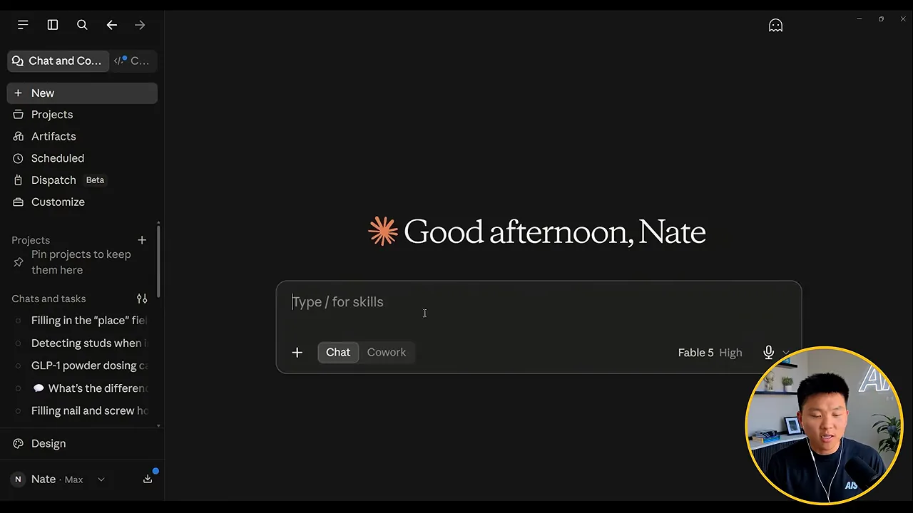
Nate는 AI를 다루는 일의 대부분이 마음가짐이라고 말해요. 그래서 'Becoming AI Native'라는 책까지 썼대요. 사람을 관리해 본 사람이 하던 일, 즉 기대치를 정하고 '이게 잘한 거야'를 알려 주는 일이 에이전트 관리로 그대로 옮겨 간대요. 가장 큰 마음가짐 전환은 두 가지예요.
- 호기심. 'AI가 이걸 할 수 있어?'는 예/아니오 질문이 아니에요. '어디까지 할 수 있어?'의 문제예요.
- 검증을 AI에게 맡기기. 첫 결과를 사람이 확인하는 대신, 에이전트들이 검토하고 토론하고 고친 '8번째 결과'를 받아요. 그러면 70%짜리가 아니라 가볍게 훑어보기만 하면 되는 결과가 와요.
프롬프트 한 줄로 리드 50개
첫 시연은 영업 리드 수집이에요. 아래 화면 오른쪽 위 말풍선이 Nate가 보낸 프롬프트예요. 'Clay 프로젝트를 써서 오늘 맞춤 아웃리치를 보낼 보강된 최적 리드 50명을 찾아 구글 시트로 줘'라는 한 줄이에요. 그 아래로 Claude가 Clay 스킬을 불러오고, Clay CLI(Command Line Interface) 버전이 낡았다며(0.1.11) 스스로 업그레이드하는 과정이 보여요.
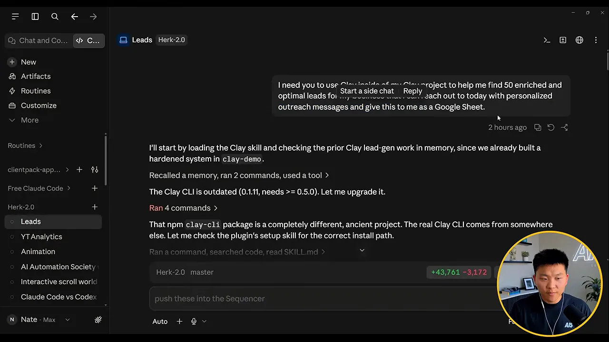
Nate는 어떤 리드가 좋은지, 자기 사업이 뭔지 설명하지 않았어요. Claude가 프로젝트 폴더를 뒤져 Nate가 누구에게 팔려는지, 즉 ICP(Ideal Customer Profile)를 알아냈어요. 그다음은 도구를 부르고, 생각하고, 결과를 확인하는 일을 반복해요. Nate는 이걸 에이전틱 루프라고 불러요.
Clay는 B2B(Business to Business) 리드 데이터를 갖춘 도구로, 그 안에서 자동화도 만들 수 있어요. Nate가 강조하는 건 새 도구의 화면을 배울 필요가 없었다는 점이에요. API(Application Programming Interface) 키만 주자 Claude가 Clay 사용법을 스스로 익혔어요. 여기서 Nate가 자주 인용하는 말이 나와요.
You can outsource the thinking but you cannot outsource the understanding.
생각은 외주 줄 수 있어도, 이해는 외주 줄 수 없어요.
— 영상 24:02
10분이 안 돼 결과가 나왔어요. 아래 요약 첫 줄의 파란 링크가 'HVAC Leads 2026-08-26 (50 enriched + outreach)' 시트예요. 리드 50명, 한 명당 18개 열이에요. 그 아래 'What ran' 목록에 진행 과정이 있어요.
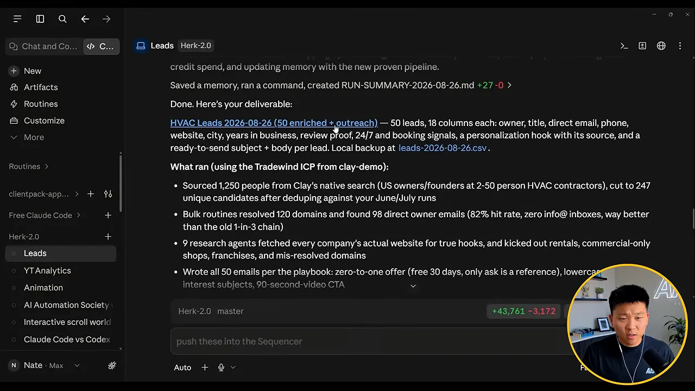
시트를 열면 직함이 대표, 소유주, 공동 소유주, 총괄 매니저처럼 모두 결정권자예요. 구글 지도 리뷰, 24시간 영업 광고 여부, 온라인 예약 여부까지 조사돼 있어요. 아래 화면 오른쪽 열들이 맞춤 훅의 출처, 이메일 제목, 이메일 본문이에요. Nate는 'Clay에 넣어서 보내 줘'라고만 하면 캠페인까지 돌릴 수 있다고 말해요.
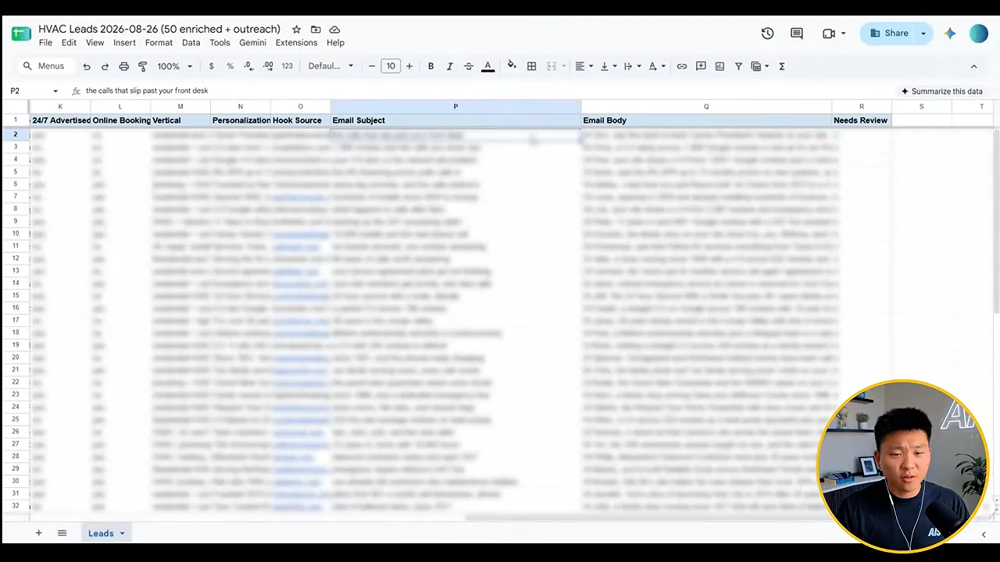
첫 초안은 주지 않는다
시연에서 안 보인 부분이 있어요. Claude는 처음 50명을 모은 뒤 다시 확인해서 별로인 사람을 빼고, 10명을 더 찾는 식으로 계속 돌았어요. Nate는 이걸 검증 루프라고 불러요. 진행자가 이게 기본 기능이냐고 묻자, Nate는 둘 다라고 답해요. 하네스도 어느 정도 확인을 하지만, 자기는 지시문, 스킬, 프롬프트에 '절대 첫 초안을 주지 마라'를 넣어 둔대요.
아래 화면에서 강조된 줄이 그 결과예요. 적대적 검증자 2개가 모든 주장을 사이트에서 확인한 사실과 대조했어요. 7월 31일에 끝난 프로모션을 훅으로 쓴 메일을 포함해 실제 문제 5개를 잡았고, 다섯 개 모두 고쳤어요. 바로 아래 'Cost' 줄에는 Clay 크레딧 245개, 약 17달러, 깨끗한 리드 하나에 0.35달러라고 적혀 있어요.
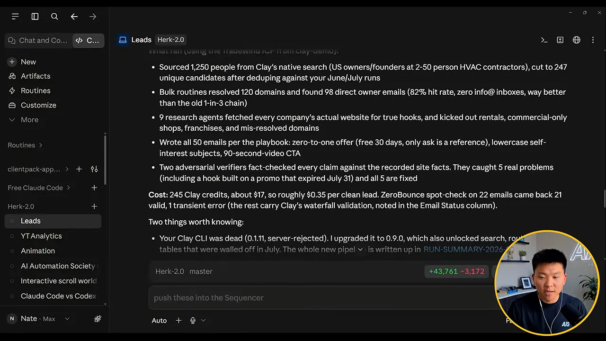
flowchart LR A["Clay 검색
1,250명"] --> B["중복 제거
247명"] B --> C["연구 에이전트 9개
회사 사이트 조사"] C --> D["이메일 50통 작성"] D --> E["적대적 검증자 2개
문제 5개 발견"] E --> F["수정 후 전달
리드 50명"]
첫 결과물이 별로인 이유와 AI 운영체제
진행자는 많은 사람이 그만두는 지점을 짚어요. Claude Code를 켜고 신나게 말을 걸었는데 첫 결과가 평범하면, '역시 과대광고였네' 하고 떠나 버려요. 앞의 시연이 보여 준 건 첫 결과 대신 스스로 점검하고 고친 결과를 받도록 과정을 설계할 수 있다는 점이에요.
자전거 방법
Nate는 이걸 자전거 방법이라고 불러요. 스킬이든 워크플로든 처음 만들 때는 아이에게 자전거를 가르치듯 해야 한대요. 많은 사람이 아이를 자전거에 태우고 그냥 가 버리는 것처럼 AI를 써요. 그러면 잘될 리가 없어요.
'왼쪽으로 너무 기울었어, 가운데로 와' 하고 피드백을 주며 고쳐 가야 해요. 시간이 좀 걸리지만 거기까지 가면 아이는 시속 30km로 달려도 걱정할 필요가 없대요. 진행자는 이후로도 이 비유를 여러 번 꺼낼 만큼 마음에 들어 해요.
유튜브 분석 보고서
두 번째 시연이에요. 아래 화면에 강조된 부분이 요청이고, 그 아래 문단이 동기예요. 2026년 유튜브 분석을 1분기, 2분기, 오늘까지의 3분기 보고서로 달라고 했어요. 동기는 추세를 보고 4분기에 어떤 콘텐츠에 집중할지 정하는 거예요. Nate는 이 프롬프트도 여전히 막연하다고 인정해요. 그래도 왜 하는지를 알려 주면 그 맥락으로 더 맞춤형 결과를 준대요.
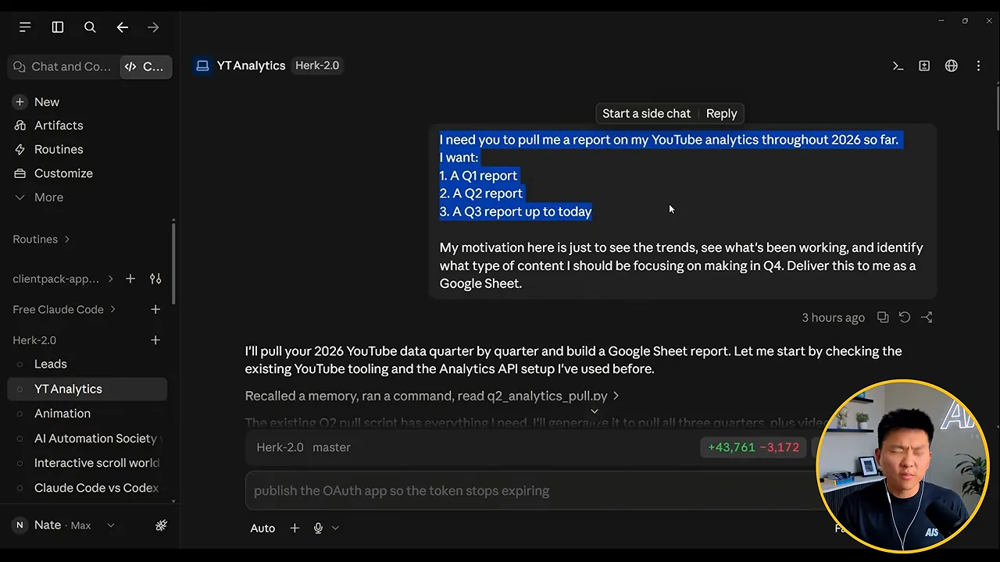
새 API 키도 데이터도 주지 않았어요. 프로젝트가 이미 Nate의 시청자와 유튜브 분석 접근 방법을 알고 있었어요. 결과는 탭 여섯 개짜리 구글 시트예요. 아래 화면 첫 탭의 분기 점수판에는 조회수, 하루 조회수, 시청 시간, 평균 시청 시간, 구독자 증가가 분기별로 있어요. 그 아래는 월별 추세예요. 맨 아래 탭 이름은 Overview, Q1~Q3 Report, Content Trends, Q4 Focus예요.
그 다음은 사람 몫이에요. Nate는 데이터를 직접 보고 이야기를 만들어요. Claude는 '3분기에 왜 급등했을까?'를 같이 따져 보는 생각 파트너예요. 영상에서 보여 주진 않았지만 댓글 분석도 맡겨요. 매주 '이번 주 댓글 300개, 큰 고민 세 가지는 이거예요'라는 보고가 와요. Skool 커뮤니티 질문도 같은 식으로 훑어요. 그래서 영상 아이디어가 부족할 일이 없대요.
AI 운영체제의 네 가지 C
진행자가 물어요. 이렇게 매끄러운 건 Claude Code가 이미 여러 계정에 접근할 수 있어서 아니냐고요. Nate는 자신이 Claude Code를 AIOS(AI 운영체제)로 쓴다고 답해요. Chrome이나 다른 앱 대신 모든 일을 Claude Code로만 해 보는 도전을 했대요. 그 경험을 아래 그림의 네 칸으로 정리했어요.
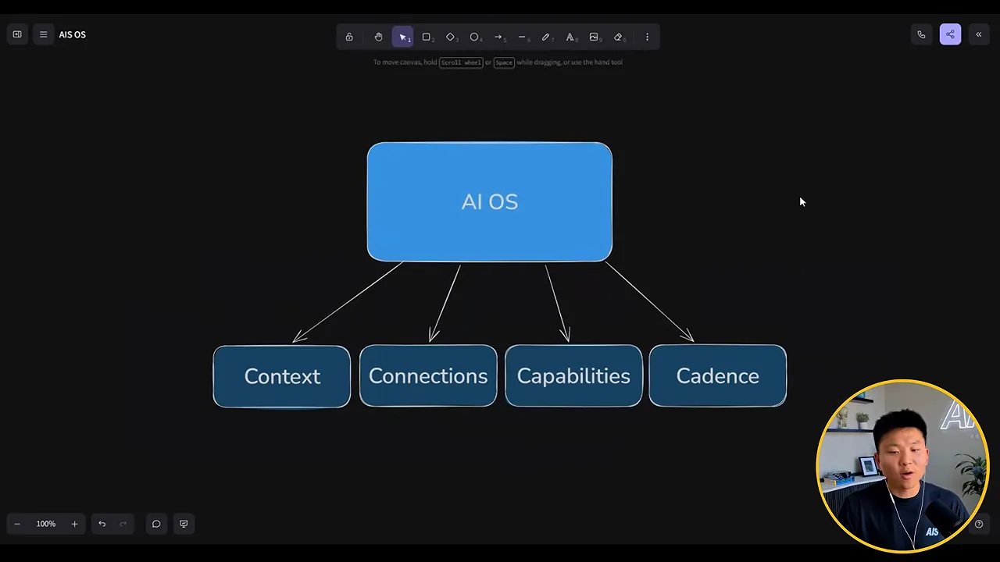
| C | 뜻 | 여기까지 오면 |
|---|---|---|
| Context (맥락) | 나, 사업, 우선순위, 목표를 AI가 아는 상태 | 같은 말을 반복하지 않아요 |
| Connections (연결) | 이메일, 캘린더, Slack, Skool, 유튜브에 닿기 | 매일 만지는 도구를 AI가 직접 다뤄요 |
| Capabilities (능력) | 자동화와 스킬 만들기 | 반복 작업을 맡길 수 있어요 |
| Cadence (주기) | 내가 부르지 않아도 시간·사건에 맞춰 실행 | 자는 동안, 휴가 중에도 일이 굴러가요 |
Nate는 매일 맥락과 연결과 능력을 조금씩 더한대요. 기초가 탄탄하면 그 위에 계속 쌓아 갈 수 있고, 그만큼 빨라진다고 해요.
영상 편집 파이프라인과 Calendly 클론
세 번째 시연은 영상 제작이에요. 아래 화면의 첫 메시지에서 Nate는 Calum Johnson 팟캐스트 브리프(구글 문서 링크)를 줬어요. 그리고 출연에 감사하는 10~15초짜리 애니메이션을 만들라고 했어요. 강조된 부분이 'Do this with hyperframes'예요. 뒤에는 '모던하고 깔끔한 리퀴드 글래스 모션 그래픽, 글자만이 아니라 이야기를 들려줄 것'이라는 조건이 붙어 있어요.
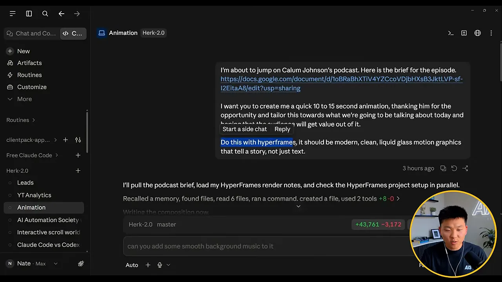
나온 결과는 15초 영상이에요. 아래 장면에는 'The business ran without me'라는 제목과 '병원에 누워 있는 동안 에이전트가 사업을 굴렸다'는 문장이 있어요. 오른쪽 카드 세 장은 Lead intake, Client updates, Reporting이 'RUNNING' 상태라고 보여 줘요. 앞에서 Nate가 들려준 입원 이야기를 브리프에서 읽어 와 장면으로 만든 거예요.
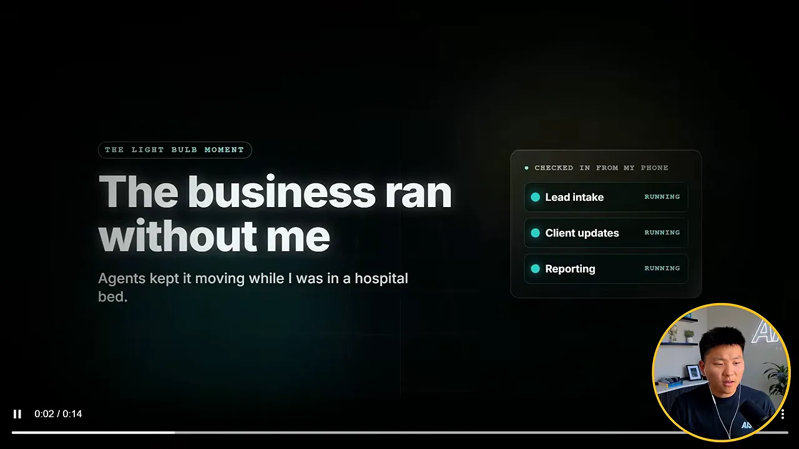
원본 파일만 넣으면 편집까지
더 보여 줄 만한 건 실제로 올린 유튜브 영상이에요. 15분짜리 원본을 파이프라인에 넣고 '유튜브용으로 편집해 줘'라고 하자 10분짜리 영상이 나왔대요. 아래 장면이 그중 하나예요. 왼쪽에는 두 번째 사례('02 SUPPORT')의 흐름도가 'SOURCES'에서 'QUEUE'로 이어지고, 오른쪽에는 Nate의 얼굴이 나란히 나와요.
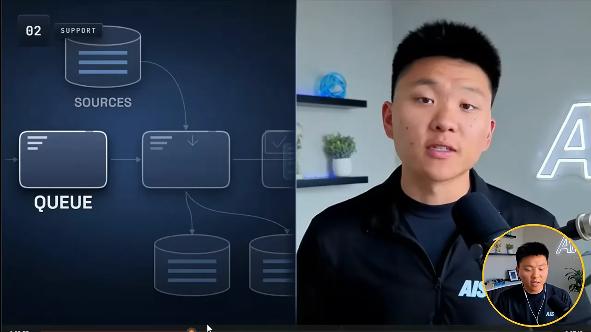
편집 방식에도 규칙이 있어요. 사례 1을 마치면 그 화면을 뒤로 밀어 두고 2, 3, 4번 자리를 보여 줘요. 시청자가 '나머지는 뭐지?' 하고 궁금해하게 만드는 열린 고리예요. 진행자가 화면 전환 결정까지 AI가 했냐고 묻자, Nate는 파이프라인을 이렇게 설명해요.
flowchart LR A["원본 영상"] --> B["받아쓰기·맥락 파악"] B --> C["에이전트들이
애니메이션 토론"] C --> D["HyperFrames로 제작
브라우저 렌더링"] D --> E["3초마다 스크린샷
다시 보며 점검"] E -- "화면 밖 요소·브랜드 불일치" --> C E --> F["완성본 (v8)"]
아래 화면은 그 작업 폴더예요. 썸네일처럼 보이는 파일이 수십 개 있는데, 버전마다 남긴 렌더와 QA(Quality Assurance) 스크린샷이에요. Nate에 따르면 asset, composition, 대본, 인덱스, QA 폴더가 생겼고, 최종본은 'version 8 master'였어요. 한 편에 6~10시간 걸리기도 해서 자기 전에 돌려 두면 아침에 올릴 영상이 생긴대요.
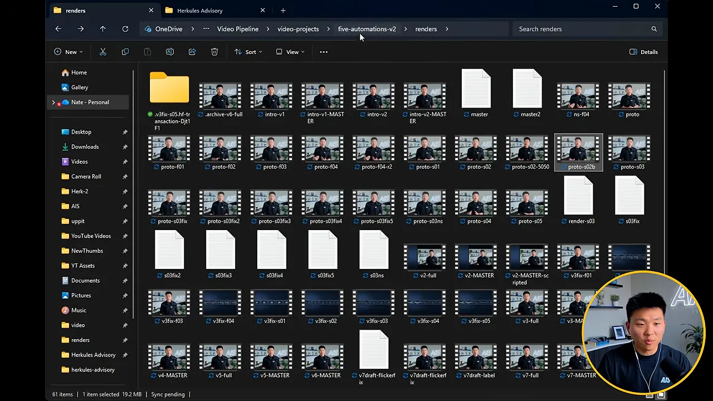
쓸 때마다 나아지는 이유도 있어요. 결과를 보고 '여기는 좋았고 여기는 싫었어. 다음엔 이건 더, 저건 덜 하도록 스킬을 고쳐'라고 말하기 때문이에요. 좋은 쪽과 나쁜 쪽 피드백을 꾸준히 주는 게 전부래요.
목표 프롬프트: 끝날 때까지 멈추지 않기
진행자가 이 편집이 얼마나 자율적이었냐고 묻자, Nate는 목표 프롬프트 얘기를 꺼내요. 그 직전에 영상은 'AI HARNESS' 자막을 띄워요. 모델에 도구, 지시, 점검을 붙여 실제로 일하게 만드는 소프트웨어라는 설명이에요.
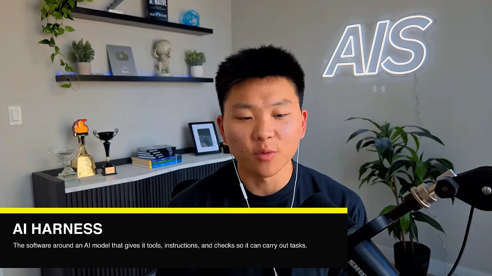
Nate는 Claude Code, Hermes Agent, Codex 모두 목표 기능이 있다고 말해요. 할 일과 원하는 상태를 정하면 거기 닿을 때까지 멈추지 않아요. 아래 화면처럼 입력창에 /goal을 치면 '조건이 충족될 때까지 계속 일하라'는 목표가 설정돼요. 목표가 켜져 있는지, 얼마나 돌았는지도 알려 줘요.
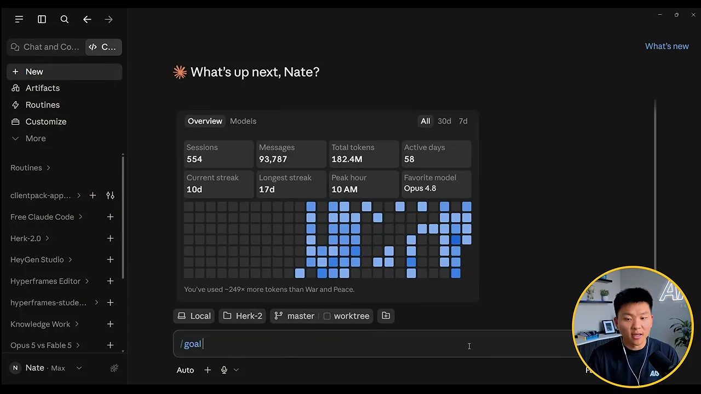
단, 앞에서 말한 연결과 권한이 미리 갖춰져야 해요. 그렇지 않으면 중간에 '이거 허락해 줘'라며 멈춰요.
목표 하나로 만든 Calendly 클론
네 번째 시연은 SnagTime이에요. Nate는 소프트웨어를 만들어 본 적이 없어요. 그런데 목표 프롬프트 하나를 줬어요. '팀이 무료로 쓸 Calendly 클론을 만들어. Calendly를 조사해서 좋은 기능을 뽑고, 계획하고, 만들고, 테스트하고, 끝나면 줘.' Calendly가 뭔지 몰라도 이렇게 시킬 수 있다는 게 요점이에요. 조사를 AI가 하니까요. 이 목표는 4일 반쯤 돌았대요.
아래는 로그인 후의 Event types 화면이에요. Duration test, Paid Scoping Session, Stripe QA Paid Call, Strategy Call 카드가 있어요. 왼쪽 메뉴는 Overview, Event types, Availability, Bookings, Integrations예요. 유료 상담은 Stripe 샌드박스로 결제를 받아요.
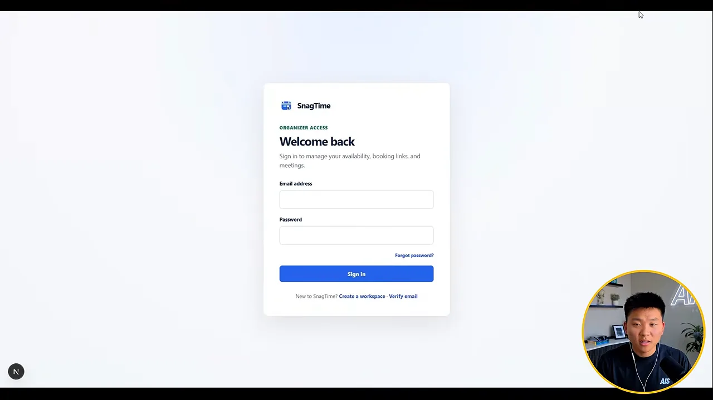
예약하는 사람에게는 아래 화면이 보여요. 무료 Strategy Call을 열면 왼쪽에 설명, 오른쪽에 시간 길이와 날짜·시간 선택이 나와요. 이 빈 시간은 Nate의 실제 구글 캘린더와 실시간으로 맞춰져요. 캘린더에 3시 일정을 넣고 새로 고치자 그 시간이 사라졌어요.
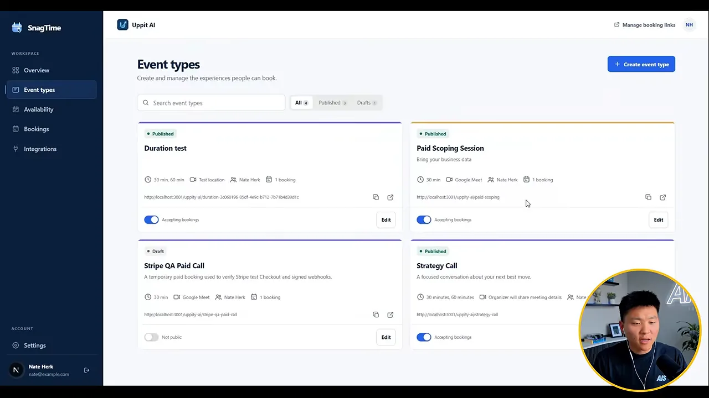
예약을 확정하면 계정 주인에게 알림이 가고, 예약한 사람에게는 확인 메일이 가요. 아래 구글 캘린더에는 금요일 칸에 방금 만든 'Strategy Call with Nate' 일정이 생겼어요.
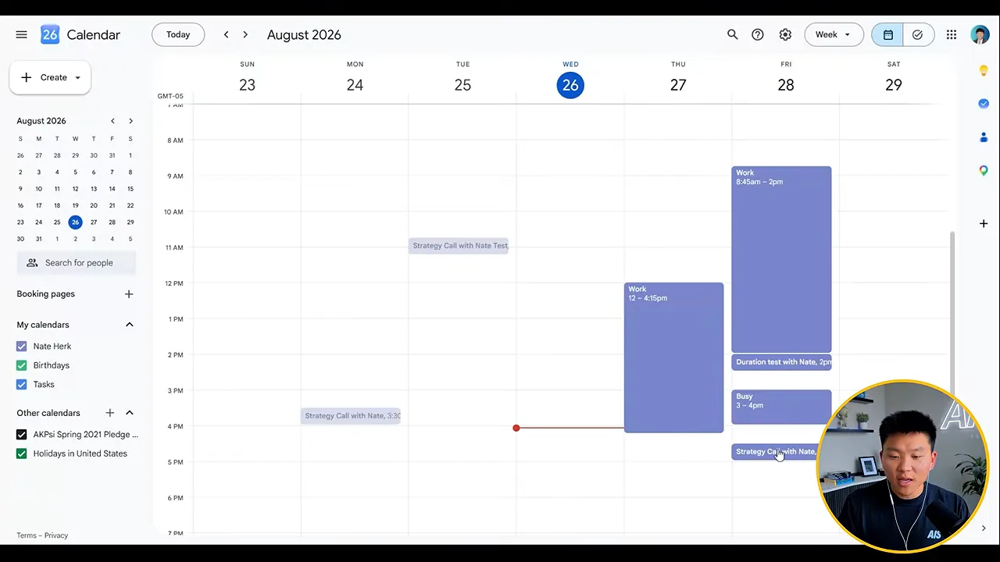
버그가 적은 이유도 설명해요. 마지막 단계에서 에이전트 50개 이상이 가짜 계정을 만들고, 가짜 예약을 넣고, 관리자로 로고를 바꾸며 모든 버튼과 예외 상황을 눌러 봤대요. 베타 사용자가 겪을 버그를 미리 잡은 셈이에요. 아마 아직 버그는 많을 거라고 Nate도 인정해요.
There's no one on this earth that couldn't instruct an AI to do that. It's just how many people would think to do that.
이렇게 지시하지 못할 사람은 세상에 없어요. 그걸 떠올리는 사람이 얼마나 되느냐의 문제예요.
— 영상 47:57
지금 AI로 돈 버는 가장 쉬운 길
진행자가 물어요. 대학을 막 졸업한 Nate라면 지금 무엇을 하겠냐고요. Nate의 답은 그때와 같아요. 작은 회사의 역량을 키워 주는 서비스형 AI 사업이에요. 그가 운영하던 에이전시와 컨설팅 회사가 바로 그 모델이었어요.
이유는 두 가지예요. 메워야 할 간극이 크고, 기업은 그걸 도와줄 전문가를 찾고 있어요. 또 Nate는 사람이 미래 예측에 서툴다고 봐요. 특히 이렇게 빨리 변하는 분야에서는 더 그렇대요. 그래서 현장 가까이 머물면서 배워 두면 방향을 바꿔야 할 때 빨리 바꿀 수 있대요. 고객과 일하면 업종마다 무엇을 걱정하고 어디서 막히는지 듣게 되고, 그게 갈 길을 정해 준다는 거예요.
'AI'라는 접두사는 떨어진다
지금은 'AI 컨설턴트'가 잘나가요. 하지만 Nate는 이 접두사가 결국 빠질 거라고 봐요. 인터넷이 처음 나왔을 때를 예로 들어요.
그래서 기업 교육은 앞으로도 할 일이 있대요. 초창기 ChatGPT 사용법을 가르쳐 월 1만 달러 넘게 벌던 사람들이 있었어요. 지금은 같은 사람들이 Claude Cowork를 가르쳐요. 변화 관리는 어렵고 주제는 여전히 겁나니까요. Nate는 기업을 가르치며 패턴을 많이 봤다고 말해요. 나중에 제품을 만든다면 꼭 알아야 할 세 가지도 짚어요. 어떤 고통이 있는지, 내 서비스가 그걸 어떻게 푸는지, 그 고통을 느끼는 사람이 정확히 누구인지예요.
비개발자의 첫걸음
Claude Code를 써 본 적 없는 사람이 이 길로 가려면 어디서 시작할까요. Nate가 고객사에서 일하며 의외로 맡게 된 큰 일은 '버거움 관리'였대요. 그래서 이렇게 권해요.
- 배우면서 생기는 질문과 걱정을 적어 두세요 — 모르는 게 뭔지도 모르는 지금의 상태가 자산이에요. 나중에 고객이 똑같은 데서 막혀요.
- 믿는 사람부터 가르쳐 보세요 — 부모님, 친한 친구처럼요. 아는 사람을 자신 있게 가르치면 모르는 사람 앞에서도 자신감이 생겨요.
- 연습에서 벗어나 실제로 해 보세요 — 진짜 가치를 줄 수 있다고 느낄 때까지는 무료로 일해도 돼요. 브랜드 평판을 지키면서 돈보다 경험을 먼저 챙기는 방법이에요.
Nate는 지금 모두가 같은 출발선에 있다고 말해요. 그리고 가장 배우기 좋은 사람은 수십 년 경력의 전문가가 아니라 한두 걸음만 앞선 사람이래요.
Claude Code를 처음 열면 할 일
진행자는 데스크톱 앱을 처음 연 사람이 무엇부터 해야 하는지 물어요. Nate는 먼저 Claude Code가 내 컴퓨터의 폴더 안에서 일한다는 점을 설명해요. 파인더나 파일 탐색기에서 보는 바로 그 폴더예요. 그래서 다운로드 폴더의 파일을 옮기고, 이름을 바꾸고, 정리할 수 있어요. 새 대화를 열 때는 어떤 프로젝트, 즉 어떤 폴더에서 일할지 골라요.
Nate가 지금까지 시연한 곳은 'Herk-2.0' 프로젝트로, 그의 AIOS예요. 여기서 프롬프트를 보내면 Claude는 가장 먼저 CLAUDE.md를 읽어요. 아래 화면의 자막이 그 뜻을 설명해요. Claude Code가 중요한 맥락, 규칙, 우선순위, 그리고 무엇을 어디서 찾을지 배우려고 읽는 프로젝트 지시 파일이에요.
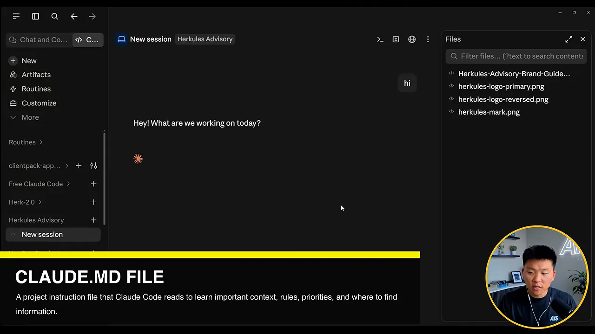
Nate의 CLAUDE.md
Nate는 자기 CLAUDE.md를 열어 보여 줘요. 맨 위 제목은 Nate Herk의 AI Operating System이에요. 첫 문단은 운영, 인사, 관리에 쓰는 시간을 줄여 AI 공부와 유튜브에 집중하게 하는 게 1순위라고 정해요. 그 아래 'Routing Map' 표가 핵심이에요. Need 열에 필요한 것, Path 열에 볼 위치, Rule 열에 지킬 규칙이 있어요. 사업·팀·'OTAs'·지표는 Herk Brain 위키, 법인 구조·세금·지식재산은 위키의 별도 파일을 보라는 식이에요. 말투가 필요하면 references/voice 폴더를 먼저 읽으라고 해요.
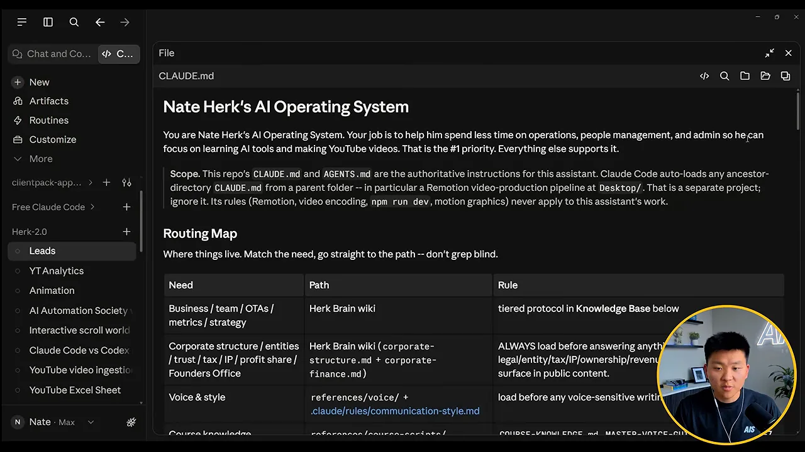
CLAUDE.md는 맥락을 정한 뒤 '무엇은 어디에'만 알려 줘요. 내용 자체는 다른 파일에 있어요. 영상 56:38에서 보기그래서 'hi'만 쳐도 Claude는 어디를 보고 무엇을 해야 할지 알아요. 처음부터 이걸 다 갖출 필요는 없대요. 새 파일과 새 사실이 생기면서 매일 바뀌는 파일이에요.
빈 폴더에서 처음부터
이제 새 프로젝트로 직접 해 봐요. 가상의 컨설팅 회사 'Herkules Advisory' 폴더에는 로고와 브랜드 가이드 PDF(Portable Document Format)만 있어요. Nate가 '이건 Herkules Advisory라는 컨설팅 회사 프로젝트야. 자동화를 만들고 싶어. 지금 있는 건 로고와 브랜드 가이드고, 내 이름은 Nate야'라고 말하자, Claude는 폴더부터 살펴봤어요. 아래 화면에서 Claude는 브랜드를 기억해 뒀다고 말해요. 그리고 컨설팅 회사에 맞는 자동화 방향 네 가지를 제안해요. 고객용 문서, 보고, 파이프라인·운영, 마케팅이에요.
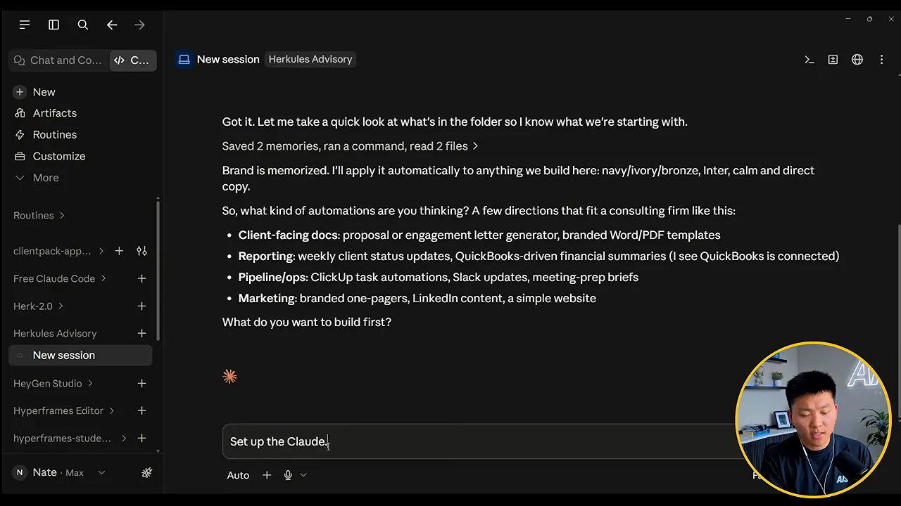
CLAUDE.md를 만들라고 안 했더니 메모리에만 저장했어요. 그래서 입력창에 'Set up the Claude…'를 다시 치는 중이에요. 영상 58:38에서 보기다시 요청하자 CLAUDE.md가 생겼어요. 아래 화면에 Project Overview(회사 소개와 포지셔닝 문구), Files(파일 네 개와 각각 언제 쓰는지), Brand Rules가 차례로 있어요. 아래로 내리면 색, 글꼴, 로고 사용법, 말투(차분하게, 결론 먼저, 유행어 없이), 표기 규칙이 이어져요. 표기 규칙에는 회사 이름을 k를 넣은 'Herkules'로 쓰라는 줄도 있어요.
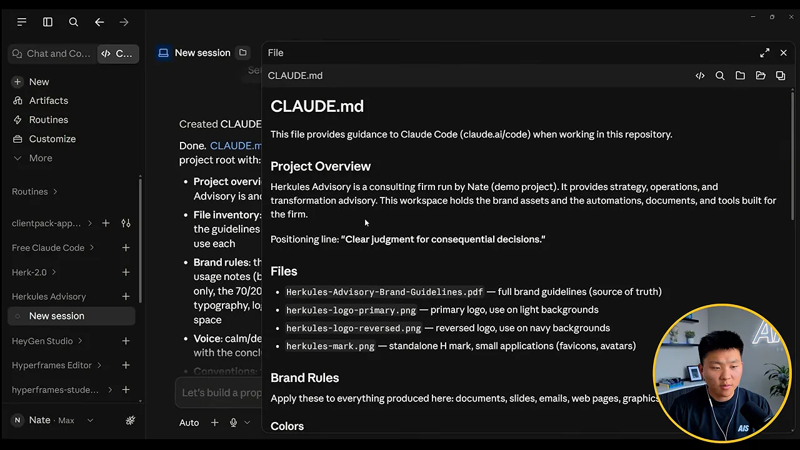
Nate는 여기에 'Rules' 항목을 직접 타이핑해 넣어요. '결과물을 만들면 Nate에게 주기 전에 검증 단계를 거쳐라. 시각적인 걸 만들면 스크린샷을 찍어 검증했다는 걸 보여 줘라.' 검증 방법은 스크린샷 말고도 팩트체크, 직접 클릭해 보기 등 여러 가지라고 덧붙여요.
새 직원 온보딩처럼
진행자는 이 과정이 첫 직장에서 받던 온보딩과 같다고 말해요. 직무 설명서와 회사 문서를 받고, 첫 몇 주는 매니저 옆에 앉아 배우던 때요. Nate도 그게 가장 좋은 비유라고 동의해요. 핵심은 내 머릿속에 있는 걸 AI의 머릿속으로 옮기는 거래요. 한번 알면 저장해 두고 잊지 않으니까요. 처음에 시간이 좀 들지만, 이 지시서를 바탕으로 일하니 길게 보면 시간을 크게 아낀다는 거예요.
스킬을 제대로 만드는 법
이제 자전거 방법을 실제로 해 봐요. 만들 것은 스킬이에요. Nate는 스킬을 반복 가능한 레시피라고 설명해요. 초코칩 팬케이크를 한 번 정말 맛있게 만들었다면 매번 감으로 하지 않고 레시피를 적어 두잖아요. 그는 링크드인 글쓰기 스킬로 매번 같은 형식과 훅 구조를 따르게 한대요.
일부러 짧게 쓴 프롬프트가 아래 화면 오른쪽 말풍선이에요. 'market analysis라는 스킬을 만들고, 지금 SMB 컨설팅 시장 조사 보고서를 HTML 문서로 만들어 줘.' 브랜드 가이드를 쓰라는 말도, 검증하라는 말도 없어요. 방금 만든 CLAUDE.md를 읽을지 보려는 거예요. 같은 대화 안에서는 새로 읽지 않을 수도 있대요.
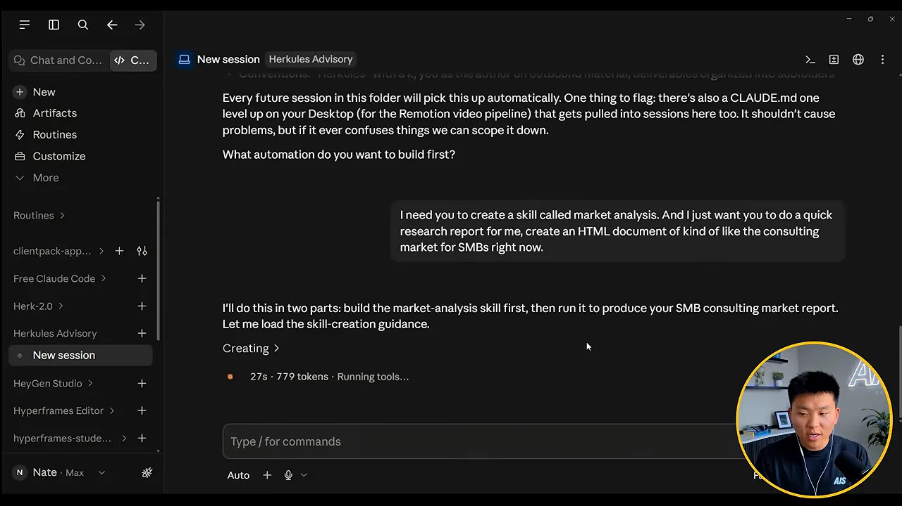
지켜보는 게 반이에요
Nate는 대부분이 프롬프트를 보내고 다른 창으로 가 버린다고 말해요. 그런데 옆에서 봐야 방향을 잡아 줄 수 있어요. 아래 화면은 Claude가 스킬을 만드는 과정이에요. 위에서부터 /create-skill 실행, SKILL.md 생성, 그리고 'SMB consulting market size 2025 2026', 'fractional executive CFO' 같은 웹 검색이 줄줄이 보여요. 작업 내용이 자연어로 나오니 잘못 가면 바로 끼어들 수 있어요.
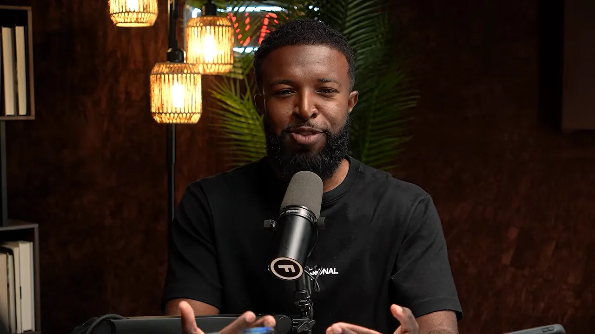
Nate가 Claude Code를 배운 방법도 이거였대요. 유튜브를 보지 않고 며칠 동안 작업을 지켜봤어요. 예전에는 bash, glob, grep 같은 외계어가 떴는데, 사실은 무언가를 찾거나 명령을 실행하는 터미널 명령이에요. 모르는 줄이 나오면 복사해서 '여기서 뭘 했고 왜 했어?'라고 물었대요. 어떻게 생각하는지 이해하자 거꾸로 지시를 더 잘하게 됐다고 해요.
기다리는 동안 Nate는 엔진과 자동차 비유를 들어요. Fable 5가 엔진이고, Claude Code라는 하네스가 자동차예요. 엔진은 갈아 끼울 수 있대요.
첫 결과: 스킬 하나, 보고서 하나
4분쯤 지나 결과가 나왔어요. 아래 화면 'Done. Two deliverables'가 그 요약이에요. 첫째는 .claude/skills/market-analysis/SKILL.md 스킬이에요. /market-analysis <topic>으로 부를 수 있다고 적혀 있어요. 둘째는 reports 폴더의 HTML 보고서예요. CLAUDE.md의 브랜드 규칙을 적용했고, 방금 넣은 새 규칙대로 브라우저 스크린샷 검증도 거쳤어요.
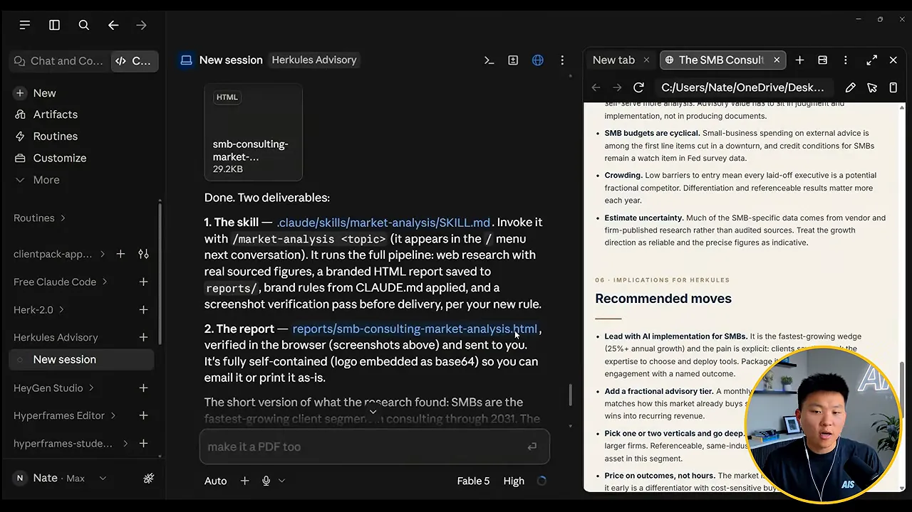
Nate는 스킬이 두 가지 방식으로 쓰인다고 설명해요. 슬래시 명령으로 직접 부르거나, 'Claude가 이 요청에 맞겠다'고 판단하면 알아서 써요. 예를 들어 '방금 본 뉴스가 내 사업에 어떤 영향을 줄까?'라고 물으면 이 스킬을 쓸 가능성이 높대요.
보고서 끝에는 출처 16개가 달려 있어요. 아래 화면 오른쪽의 Sources 목록이에요. Mordor Intelligence, IDC(International Data Corporation), 미국 연준 보고서 같은 이름이 보여요. 하지만 Nate는 빠진 게 있다고 짚어요. 보기 좋은지는 확인했지만, 주장들이 서로 충돌하지 않는지, 출처가 정말 믿을 만한지는 확인하지 않았어요.
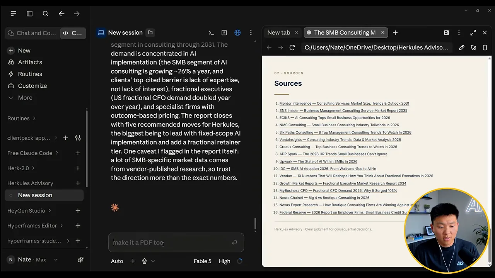
피드백을 주고, 스킬에 남기기
그래서 이렇게 말해요. '첫 결과로는 좋아. 시장 규모와 성장 부분을 더 자세히 해 줘. 앞으로도 매번 여기에 집중해. 스크린샷 검증은 잘했는데 출처 검증도 항상 해. 다른 에이전트로 모든 사실을 확인하고 2년 지난 낡은 자료는 걸러. 이걸 반영해서 스킬을 업데이트해.' 자전거로 치면 '페달을 더 빨리 밟고, 오른쪽으로 덜 기울어. 다음엔 기억해'예요.
진행자는 마지막 한마디가 핵심이라고 짚어요. '앞으로는', '스킬을 업데이트해'를 빼면 다음 보고서에서 같은 지적을 또 해야 해요. Nate는 처음 몇 시간 손해 보는 게 싫어서 자동화를 미루는 사람이 많다고 말해요. 30분이면 직접 끝낼 일에 두 시간을 쓰는 기분이 들기 때문이에요. 하지만 짧은 손해 뒤의 이득은 계속 불어난대요.
아래 화면이 피드백을 받은 Claude의 답이에요. 시장 규모 섹션을 늘리고, 필수 출처 검증 단계를 추가하고, 스킬을 고치겠다고 해요. 마지막 줄은 '이제 출처 검증 단계예요. 스킬을 고치는 동안 별도 에이전트를 띄워 모든 수치를 팩트체크할게요'예요.
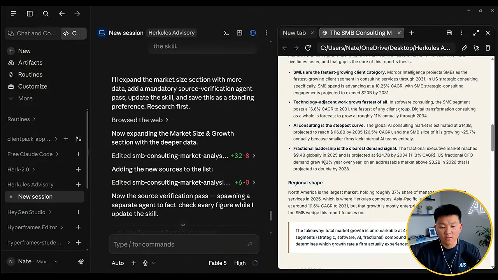
그 '별도 에이전트'가 서브에이전트예요. 실행 중인 작업을 열면 메인 에이전트가 서브에이전트에게 보낸 지시가 보여요. 아래 화면 오른쪽이 'Verify report facts and sources' 작업이에요. 보고서의 주장 21개에 번호를 매겨 나열했어요. 맨 아래에는 판정 방식이 있어요. 각 줄에 판정과 한 문장 근거를 쓰고, 낡았거나('OUTDATED') 근거 없는('UNSUPPORTED') 주장에는 대체 출처를 제안하라는 거예요.
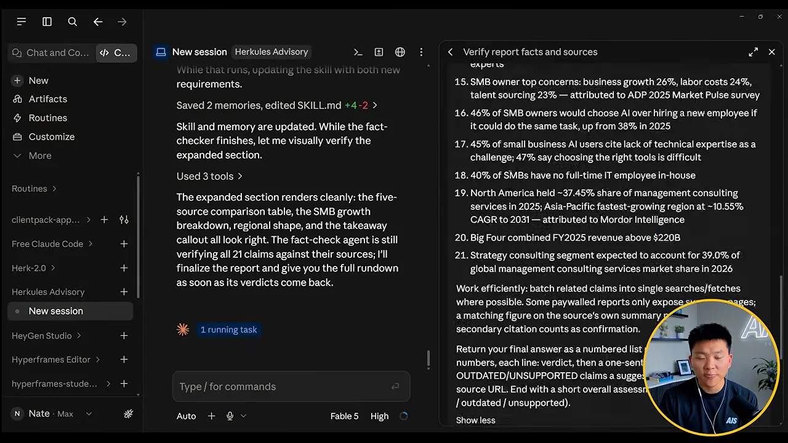
결과는 아래 화면 가운데 문장에 있어요. 주장 21개 중 18개 확인, 1개 낡음, 2개 문제였고 모두 고쳤어요. Nate는 검증을 넣지 않았다면 틀린 정보가 그대로 나갔을 거라며, 그래서 자전거 방법이 중요하다고 말해요.
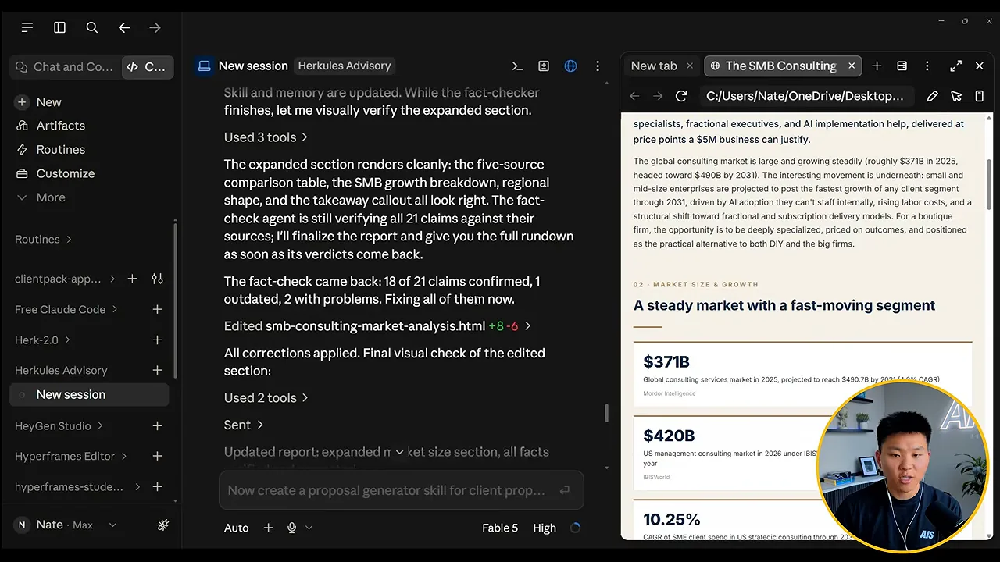
마지막으로 업데이트된 스킬을 열어요. 아래 화면 위쪽 Description에는 '시장 분석', '시장 조사', '리서치 보고서'라는 말이 나오면 쓰라는 조건이 있어요. 본문 Steps는 주제 정하기, 조사로 이어지고, 조사 단계에는 '시장 규모와 성장은 Nate가 가장 중시하는 부분이니 깊게'라는 피드백이 그대로 들어가 있어요.
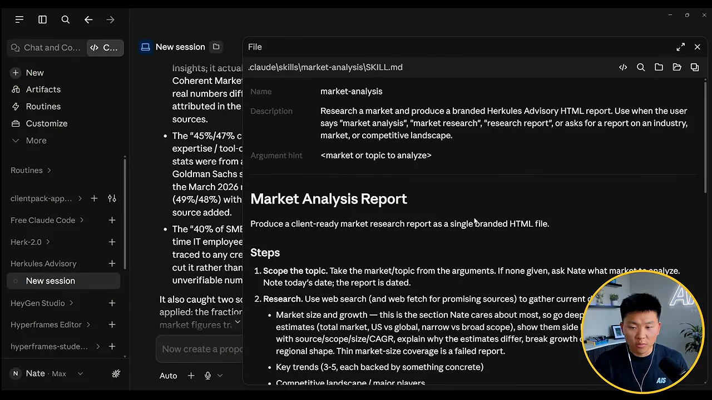
Nate가 읽어 준 단계는 범위 정하기, 조사, 작성, HTML 브랜드 적용, 차분한 말투, 출처 검증(필수), 시각 검증이에요. 스킬은 마크다운 파일 하나라서 다른 사람의 Claude에 넣어도 검증 단계까지 그대로 따라 해요.
검증 방법 세 가지
진행자는 Nate가 쓰는 검증을 세 가지로 정리해 달라고 해요. 각각 언제 쓰는지 물어요.
| 검증 | 언제 쓰나요 | 영상 속 예 |
|---|---|---|
| 스크린샷 | 시각적인 결과물일 때 | 영상 프레임 점검, HTML·PDF 보고서 칸 넘침, 웹사이트의 흰 배경 위 흰 글씨 |
| 서브에이전트 팩트체크 | 밖으로 나가는 모든 내용 | 보고서 주장 21개 중 3개 수정 |
| 브라우저·컴퓨터 사용 | 앱을 실제로 써 봐야 알 때 | Calendly 클론에서 브라우저 50개로 예약·로고 변경 테스트 |
스크린샷이 필요한 이유가 재미있어요. 코드로 색을 정할 때 AI는 흰 글씨가 밝은 배경에 묻히는지 생각하지 못할 수 있어요. 그런데 화면을 찍어 보면 바로 알아채고 글씨 뒤에 반투명 막을 깔아요. 브라우저 사용은 화면을 보고 어디를 누를지 판단해 클릭하고 입력하는 거예요. Calendly 클론에서는 에이전트들이 버그를 보고하면 메인 에이전트가 고치고, 다시 50개를 보내는 고리를 돌렸대요.
진행자는 Nate의 다른 영상 내용을 꺼내요. 검증 없이 첫 시도로 받는 건 원하는 것의 60% 정도이고, 피드백과 검증을 더해야 100%에 가까워진다는 거예요. 사람들이 'AI 슬롭'이라 부르는 평범한 결과는 그 60%를 본 거래요. Nate는 기대치를 맞추는 문제라고 덧붙여요. '시장 분석 해 줘'처럼 막연하면 AI는 짐작으로 채워요. 무엇이 좋은지, 무엇이 중요한지, 왜 하는지를 말하면 첫 결과부터 훨씬 나아진대요.
이번 주말에 할 일
진행자의 마지막 질문이에요. 이 대화를 듣고 의욕이 생긴 사람에게 토요일 오후나 일요일 저녁 몇 시간이 생겼다면 무엇부터 하라고 하겠냐는 거예요. 3개월, 6개월, 12개월 뒤의 달라진 모습으로 가는 첫걸음 말이에요.
Nate의 답은 grill-me 세션이에요. grill-me는 원하는 주제를 완전히 이해할 때까지 집요하게 인터뷰하는 스킬이에요. 방법은 이래요.
flowchart LR A["빈 Claude 프로젝트"] --> B["grill-me 스킬 넣기"] B --> C["'내 코치가 돼 줘.
나를 다 알아야 해'"] C --> D["질문 50개쯤
몇 시간 쏟아 내기"] D --> E["맥락 저장"] E --> F["이후 모든 대화·도구에서
다시 설명할 필요 없음"]
프롬프트 예시는 '내 개인 라이프 코치가 돼 줘. 내 배경, 동기, 중요한 것, 가고 싶은 곳을 다 알아서 거기까지 가도록, 더 생산적이도록 도와줘'예요. 질문이 50개쯤 나와도 시간을 들여 자신과 목표를 다 털어놓으래요.
인터뷰가 끝나면 시스템이 달라진 게 느껴진대요. 평생 알고 지낸 사람과 이야기하는 기분이 들 수도 있대요. 그 맥락이 저장되니 무엇을 만들든, 아이디어를 검토하든 처음부터 설명할 필요가 없어요. 가장 답답한 게 같은 말을 반복하는 것과 시스템끼리 따로 노는 거라서, 이게 속도를 크게 높여 준대요.
이건 앞에서 말한 네 가지 C의 첫 칸, 맥락을 한 번에 채우는 방법이기도 해요. Nate는 자기 AI 운영체제 폴더를 Claude Code, Codex, Hermes Agent, OpenClaw 등 어떤 새 도구에든 꽂아 쓴대요. 그러면 그 도구도 바로 자신을 다 알아요.
That's all of my IP. That's like the most valuable thing I have right now is all those files and folders.
그게 제 지식재산 전부예요. 지금 제가 가진 가장 값진 건 그 파일과 폴더들이에요.
— 영상 01:22:55
진행자는 grill-me 스킬 링크를 설명란에 달겠다고 약속하며 대화를 마쳐요. 그리고 자신처럼 코더도 실리콘밸리 사람도 아닌 시청자에게 도움이 되고 싶었다고 말해요.